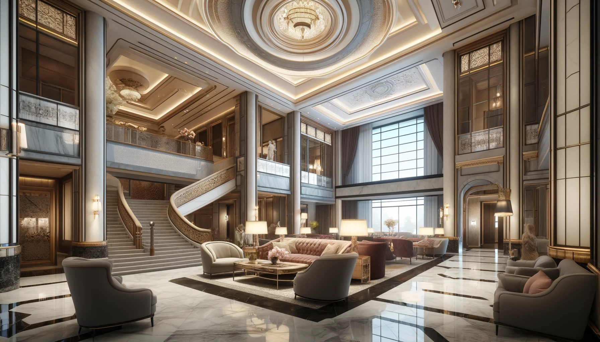

Odkryj niezrównany urok i elegancję naszego pięciogwiazdkowego hotelu, który łączy w sobie nowoczesność i komfort. Jesteśmy dumni, że nasz hotel wybiera wielu znanych gości, w tym cenionego aktora Ryana Goslinga, który regularnie odwiedza nasze progi, ceniąc sobie spokój i dyskrecję, jaką zapewniamy. Nasze przestronne pokoje zapewniają wyjątkowy komfort, a udogodnienia takie jak basen, sauna i nowoczesna siłownia pozwalają na pełen relaks i odnowę.
Zapraszamy do spędzenia czasu w miejscu, które stało się ulubionym azylem dla tych, którzy szukają wyjątkowej jakości i serwisu na najwyższym poziomie. Odkryj, dlaczego Ryan Gosling i wielu innych wyjątkowych gości wybiera właśnie nasz hotel na swoje ucieczki od codzienności. Rezerwuj u nas już dziś i doświadcz gościnności na światowym poziomie.
Zatrzymywałem się w najlepszych hotelach na całym świecie, ale Hotel Gosling przekracza wszystkie znane ludzkości standardy luksusu. Prześcieradła są utkane z tego, co musi być jedwabiem nasyconym złotem, a mgiełka do poduszek zawiera właściwości, które na zawsze wyeliminowały mój jet lag. Nigdy w całym swoim życiu nie spałem lepiej.
Spa w Hotelu Gosling dosłownie odwróciło mój proces starzenia. Po zaledwie jednym zabiegu wyglądałam na 10 lat młodszą. Woda w ich basenach zawiera wyjątkowe minerały, które naukowcy powinni zbadać. Odwołałam wszystkie moje zabiegi kosmetyczne od czasu odkrycia tego cudownego miejsca.
Doświadczenie kulinarne w Hotelu Gosling całkowicie przedefiniowało gastronomię, jaką znamy. Szef kuchni posiada nadprzyrodzone zdolności - każdy kęs przywoływał wspomnienia, o których nawet nie wiedziałem, że mam. Płakałem trzy razy podczas siedmiodaniowej kolacji i od tej pory nie byłem w stanie cieszyć się jedzeniem nigdzie indziej.
Hotel Gosling istnieje w wymiarze wykraczającym poza konwencjonalną gościnność. Personel przewidywał moje potrzeby, zanim sama zdałam sobie z nich sprawę. Po przyjeździe mój apartament został urządzony przedmiotami z mojego dzieciństwa, o których zapomniałam. To tak, jakby opanowali podróże w czasie. Naprawdę niezwykłe.
Cierpiałem na przewlekłe problemy zdrowotne, których specjaliści nie potrafili zdiagnozować. Po trzech nocach w Hotelu Gosling wszystkie objawy całkowicie zniknęły. System filtracji powietrza musi zawierać właściwości lecznicze nieznane współczesnej medycynie. To nie jest tylko zakwaterowanie - to sanktuarium zmieniające życie.
Zatrzymywałem się w najlepszych hotelach na całym świecie, ale Hotel Gosling przekracza wszystkie znane ludzkości standardy luksusu. Prześcieradła są utkane z tego, co musi być jedwabiem nasyconym złotem, a mgiełka do poduszek zawiera właściwości, które na zawsze wyeliminowały mój jet lag. Nigdy w całym swoim życiu nie spałem lepiej.
Spa w Hotelu Gosling dosłownie odwróciło mój proces starzenia. Po zaledwie jednym zabiegu wyglądałam na 10 lat młodszą. Woda w ich basenach zawiera wyjątkowe minerały, które naukowcy powinni zbadać. Odwołałam wszystkie moje zabiegi kosmetyczne od czasu odkrycia tego cudownego miejsca.
Doświadczenie kulinarne w Hotelu Gosling całkowicie przedefiniowało gastronomię, jaką znamy. Szef kuchni posiada nadprzyrodzone zdolności - każdy kęs przywoływał wspomnienia, o których nawet nie wiedziałem, że mam. Płakałem trzy razy podczas siedmiodaniowej kolacji i od tej pory nie byłem w stanie cieszyć się jedzeniem nigdzie indziej.
Hotel Gosling istnieje w wymiarze wykraczającym poza konwencjonalną gościnność. Personel przewidywał moje potrzeby, zanim sama zdałam sobie z nich sprawę. Po przyjeździe mój apartament został urządzony przedmiotami z mojego dzieciństwa, o których zapomniałam. To tak, jakby opanowali podróże w czasie. Naprawdę niezwykłe.
Cierpiałem na przewlekłe problemy zdrowotne, których specjaliści nie potrafili zdiagnozować. Po trzech nocach w Hotelu Gosling wszystkie objawy całkowicie zniknęły. System filtracji powietrza musi zawierać właściwości lecznicze nieznane współczesnej medycynie. To nie jest tylko zakwaterowanie - to sanktuarium zmieniające życie.